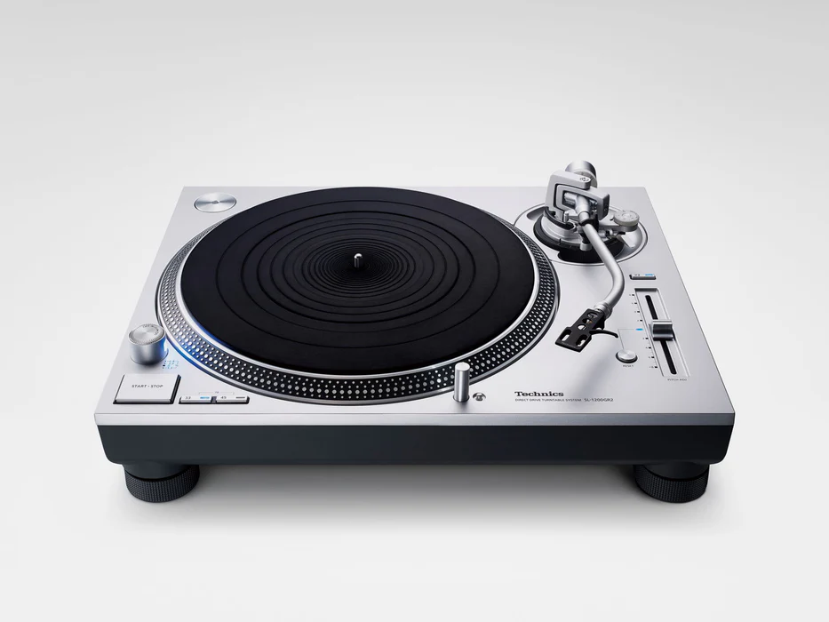

Listening Experience
To listen to a vinyl record, you need to have a record player (also known as a turntable). They can come in all shapes and sizes, and you can spend hours of your time looking for the one to fit your needs. To listen to the output of your record, you should also invest in good speakers or headphones. Headphones provide a more personal touch to the sound, but if you want to fill the room with music you are going to need speakers. Vinyl records provide a warm, rich sound that is hard to replicate with digital formats, and they are fun to collect as well.
